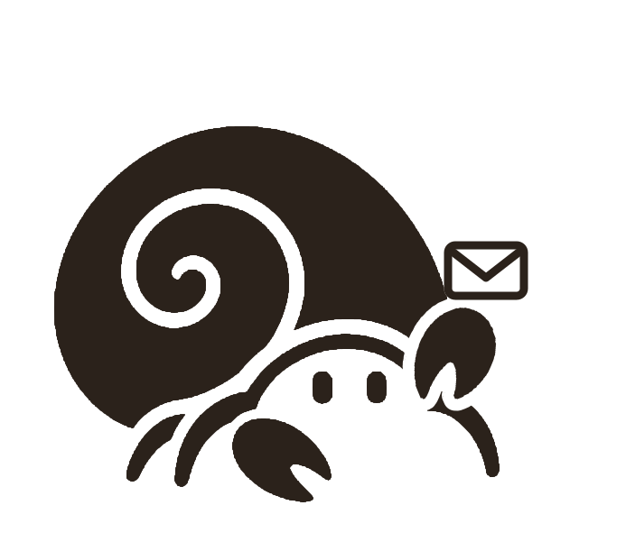
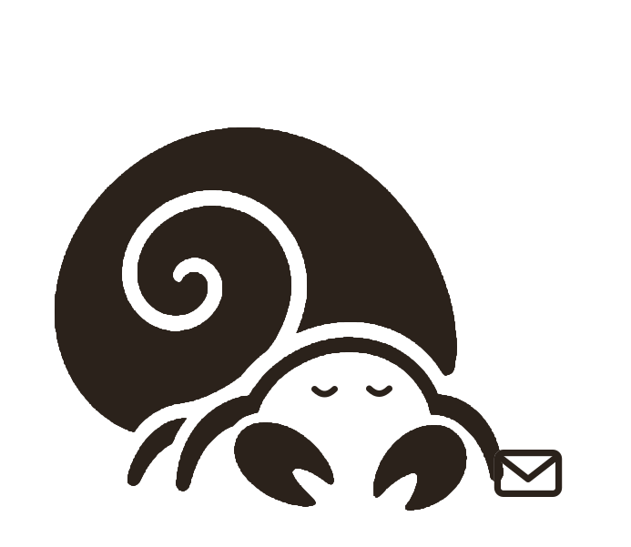
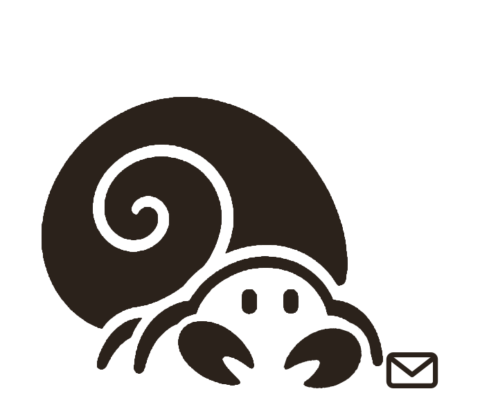
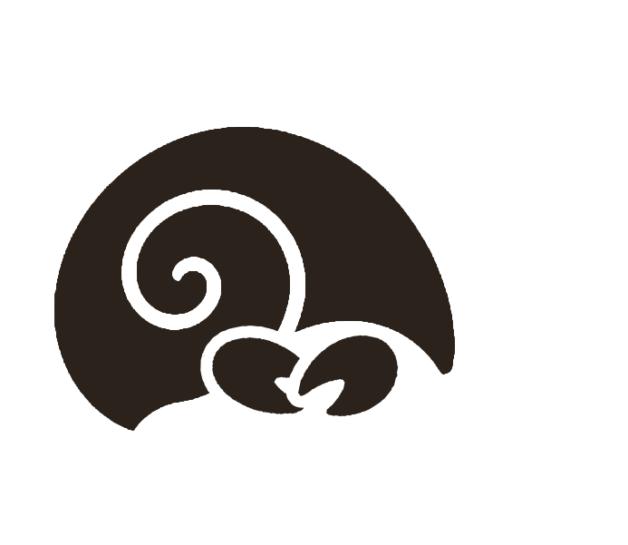

EXPRESSION SHEET A

1. IDLE
The logo. Ready and watching.

2. THINKING
Looks up, a thought forming.

3. WORKING
Holds the task it picked.

4. ASKING
Holds up the exact message.

5. DONE
Eyes closed, job set down.

6. ERROR
Looks at what fell.

7. BLOCKED
Tucked in, claws shut the door.

8. OFFLINE
Tucked in, still working.